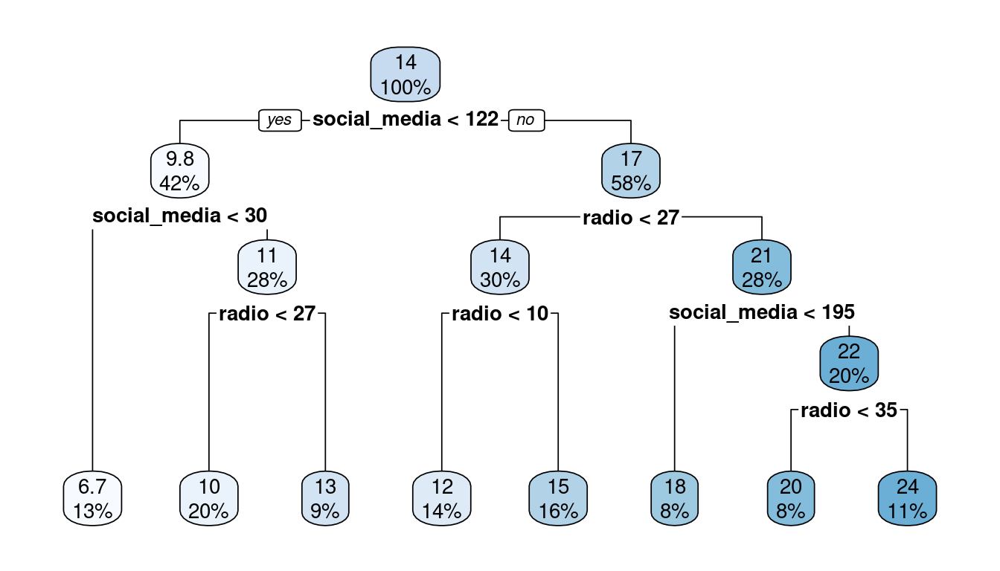

install.packages("ISLR2")
library(ISLR2)
?BostonExercises IV
Data Science and Data Analytics
The Data Science Workflow – Model
- The
ISLR2package contains theBostondata set, which recordsmedv(median house value) for 506 suburbs of Boston. We will seek to predictmedvusing 12 predictors such asrm(average number of rooms per house),age(proportion of owner-occupied units built prior to 1940) andlstat(percent of households with low socio-economic status).- Install and load the
ISLR2package. Investigate the description of all variables in theBostondata set via?Boston.
- We will first do a random train-test split. Using the function
sample, randomly choose 405 (i.e. approximately 80%) of the observations and assign them to a newdata.framecalledtrain. Assign all others to adata.framecalledtest.
library(ISLR2) n <- nrow(Boston) n_train <- 405 train_ind <- sample(n, n_train) train <- Boston[train_ind, ] test <- Boston[-train_ind, ]- Using the training data set, estimate a simple linear regression model with
medvas the response andlstatas the predictor. Inspect the createdlmobject usingsummaryand interpret regression coefficients, their statistical significance and the \(R^2\) statistic. Furthermore determine a 95%-confidence interval for the slope coefficient \(\beta_1\).
m1 <- lm(medv ~ lstat, data = train) summary(m1)Call: lm(formula = medv ~ lstat, data = train) Residuals: Min 1Q Median 3Q Max -15.065 -3.883 -1.405 1.721 24.609 Coefficients: Estimate Std. Error t value Pr(>|t|) (Intercept) 34.4851 0.6170 55.89 <2e-16 *** lstat -0.9543 0.0427 -22.35 <2e-16 *** --- Signif. codes: 0 '***' 0.001 '**' 0.01 '*' 0.05 '.' 0.1 ' ' 1 Residual standard error: 6.148 on 403 degrees of freedom Multiple R-squared: 0.5534, Adjusted R-squared: 0.5523 F-statistic: 499.4 on 1 and 403 DF, p-value: < 2.2e-16# Note: exact values will be different for every run due to the random selection of # train and test data. # Interpretation of regression coefficients: # slope: for an increase in the percentage of households with low socio-economic status # by one percentage point, the median house value drops on average around 954.30$. # intercept: in a suburb with no households of low socio-economic status, the median # house value is around 34,485$. # Both intercept and slope are significantly different from zero at all usual significance # levels (e.g. also 0.1%). # Interpretation of R^2: # A model containing only lstat as an explanatory variable is able to explain around # 55.3% of the variance in median house values between suburbs. confint(m1, "lstat")2.5 % 97.5 % lstat -1.038243 -0.8703427- Visualize the simple linear regression model you just fitted on the training data using a scatter plot. Hint: simply use
geom_smoothwith the method equal tolmandseset toFALSEto add the regression line into the scatter plot. Does the linear fit appear appropriate for the data at hand?
library(ggplot2) ggplot(train, aes(x = lstat, y = medv)) + geom_point() + geom_smooth(method="lm", se = FALSE) + theme_minimal()# For higher values of lstat, the relationship with medv seems to flatten # out, which indicates that a linear fit might not be appropriate to # model this relationship.- Now, estimate a new model that uses the logarithm of
lstatas an explanatory variable. Inspect its \(R^2\) and compare to the one of the simple model that is linear inlstat. Visualize the corresponding regression line in another scatter plot. Hint: for the visualization of the non-linear regression line, usegeom_function. This requires you to specify a function to be drawn into the scatter plot, for which you can usepredict.
m2 <- lm(medv ~ log(lstat), data = train) summary(m2)Call: lm(formula = medv ~ log(lstat), data = train) Residuals: Min 1Q Median 3Q Max -14.3012 -3.3930 -0.5836 1.9879 26.1718 Coefficients: Estimate Std. Error t value Pr(>|t|) (Intercept) 51.9673 1.0507 49.46 <2e-16 *** log(lstat) -12.4816 0.4312 -28.94 <2e-16 *** --- Signif. codes: 0 '***' 0.001 '**' 0.01 '*' 0.05 '.' 0.1 ' ' 1 Residual standard error: 5.243 on 403 degrees of freedom Multiple R-squared: 0.6752, Adjusted R-squared: 0.6744 F-statistic: 837.8 on 1 and 403 DF, p-value: < 2.2e-16# With this model, approximately 67.5% of the variance in the median house values # can be explained, which is considerably higher than the 55.3% of the model before. # This indicates that the log fit is indeed more suitable here. ggplot(train, aes(x = lstat, y = medv)) + geom_point() + geom_function(fun = function(x) predict(m2, newdata = data.frame(lstat = x)), color = "blue", linewidth = 1) + theme_minimal()- We now want to compare the performance of different linear regression models using 10-fold cross validation. For this, first assign each training observation randomly to a fold between 1 and 10. Next, using these folds, determine the test MSE for each of the following linear regression models.
- M1:
medv ~ lstat - M2:
medv ~ log(lstat) - M3:
medv ~ log(lstat) + crim - M4:
medv ~ log(lstat) + crim + dis - M5:
medv ~ log(lstat) + dis + rm - M6:
medv ~ log(lstat) + dis + ptratio - M7:
medv ~ lstat + dis + ptratio + crim + nox - M8:
medv ~ log(lstat) + dis + ptratio + crim + nox
- M1:
K <- 10 train$fold <- sample(rep(1:K, length.out = n_train)) mses <- matrix(NA, K, 8) colnames(mses) <- sprintf("M%d", 1:8) for(k in 1:K){ m1 <- lm(medv ~ lstat, data = subset(train, fold != k)) m2 <- lm(medv ~ log(lstat), data = subset(train, fold != k)) m3 <- lm(medv ~ log(lstat) + crim, data = subset(train, fold != k)) m4 <- lm(medv ~ log(lstat) + crim + dis, data = subset(train, fold != k)) m5 <- lm(medv ~ log(lstat) + dis + rm, data = subset(train, fold != k)) m6 <- lm(medv ~ log(lstat) + dis + ptratio, data = subset(train, fold != k)) m7 <- lm(medv ~ lstat + dis + ptratio + crim + nox, data = subset(train, fold != k)) m8 <- lm(medv ~ log(lstat) + dis + ptratio + crim + nox, data = subset(train, fold != k)) predsm1 <- predict(m1, newdata = subset(train, fold == k)) predsm2 <- predict(m2, newdata = subset(train, fold == k)) predsm3 <- predict(m3, newdata = subset(train, fold == k)) predsm4 <- predict(m4, newdata = subset(train, fold == k)) predsm5 <- predict(m5, newdata = subset(train, fold == k)) predsm6 <- predict(m6, newdata = subset(train, fold == k)) predsm7 <- predict(m7, newdata = subset(train, fold == k)) predsm8 <- predict(m8, newdata = subset(train, fold == k)) mses[k, 1] <- mean((predsm1 - train$medv[train$fold == k])^2) mses[k, 2] <- mean((predsm2 - train$medv[train$fold == k])^2) mses[k, 3] <- mean((predsm3 - train$medv[train$fold == k])^2) mses[k, 4] <- mean((predsm4 - train$medv[train$fold == k])^2) mses[k, 5] <- mean((predsm5 - train$medv[train$fold == k])^2) mses[k, 6] <- mean((predsm6 - train$medv[train$fold == k])^2) mses[k, 7] <- mean((predsm7 - train$medv[train$fold == k])^2) mses[k, 8] <- mean((predsm8 - train$medv[train$fold == k])^2) } colMeans(mses)M1 M2 M3 M4 M5 M6 M7 M8 38.18925 27.75549 27.40817 24.42848 23.38412 22.49007 29.82197 21.32557- Which of the models investigated in f. gives the lowest test MSE? Fit the corresponding model to the entire training data and investigate the model more deeply using
summary.
which.min(colMeans(mses))M8 8# Clearly, model M8 is the best. So we fit it to the entire training data: m8_full <- lm(medv ~ log(lstat) + dis + ptratio + crim + nox, data = train) summary(m8_full)Call: lm(formula = medv ~ log(lstat) + dis + ptratio + crim + nox, data = train) Residuals: Min 1Q Median 3Q Max -13.6082 -2.7435 -0.3968 1.9661 25.5635 Coefficients: Estimate Std. Error t value Pr(>|t|) (Intercept) 78.95769 3.11192 25.373 < 2e-16 *** log(lstat) -11.63807 0.50507 -23.043 < 2e-16 *** dis -1.37921 0.16825 -8.197 3.39e-15 *** ptratio -0.91311 0.11961 -7.634 1.70e-13 *** crim -0.08108 0.02848 -2.847 0.004646 ** nox -11.85103 3.35019 -3.537 0.000452 *** --- Signif. codes: 0 '***' 0.001 '**' 0.01 '*' 0.05 '.' 0.1 ' ' 1 Residual standard error: 4.564 on 399 degrees of freedom Multiple R-squared: 0.7563, Adjusted R-squared: 0.7533 F-statistic: 247.7 on 5 and 399 DF, p-value: < 2.2e-16- Using your cross-validation setup from f., compare the test MSE performance of the best-performing linear regression model now to the performance of KNN regression models that uses the same variables, i.e.
lstat,dis,ptratio,crimandnox. Let \(K\) vary between 2 and 10 and only compare the best-performing KNN approach to model M8. Is the non-parametric approach able to outperform the parametric one?
library(FNN) n_neighbours <- 2:10 # number of neighbours considered mses_knn <- matrix(NA, K, length(n_neighbours)) colnames(mses_knn) <- sprintf("K = %d", n_neighbours) for(k in 1:K){ preds <- lapply(n_neighbours, function(x) knn.reg(train = subset(train, fold != k, c(12, 8, 11, 1, 5)), test = subset(train, fold == k, c(12, 8, 11, 1, 5)), y = train$medv[train$fold != k], k = x)$pred) mses_knn[k, ] <- colMeans((do.call(cbind, preds) - train$medv[train$fold == k])^2) } round(colMeans(mses_knn), 2)K = 2 K = 3 K = 4 K = 5 K = 6 K = 7 K = 8 K = 9 K = 10 22.06 22.39 22.26 21.31 22.06 21.73 21.63 21.98 21.75# The best-performing KNN regression model has K = 5. This achieves a test MSE of # 21.31, which virtually identical to the performance of M8, which had 21.33. # Hence, when using only the 5 predictors under investigation, there is no major # difference in performance between linear regression and KNN regression.- Using all variables available in the data set, can you find an even better model? Fit your model, the model M8 and the KNN regression model with \(K = 5\) from before on the entire
traindata set. Using these fits, compare the performance of the three models on the initial hold-outtestdata set from b. Which of the three approaches has the lowest MSE on that data set?
# After investigating some more linear models in the context of cross validation, # the following model appeared particularly promising: new_m <- lm(medv ~ log(lstat) + log(dis) + ptratio + crim + nox + rm + tax + rad, data = train) m8 <- lm(medv ~ log(lstat) + dis + ptratio + crim + nox, data = train) knn <- knn.reg(train = train[, c(12, 8, 11, 1, 5)], test = test[, c(12, 8, 11, 1, 5)], y = train$medv, k = 5) # Predict the test response with the three models: new_m_pred <- predict(new_m, newdata = test) m8_pred <- predict(m8, newdata = test) knn_pred <- knn$pred # Compute MSEs: new_m_mse <- mean((new_m_pred - test$medv)^2) m8_mse <- mean((m8_pred - test$medv)^2) knn_mse <- mean((knn_pred - test$medv)^2) # Display MSEs: new_m_mse[1] 19.12033m8_mse[1] 26.08365knn_mse[1] 21.34268# Clearly, the model new_m delivers the lowest MSE on the test set out of the 3.- Now, fit a regression tree that uses predictors
lstat,dis,ptratio,crim,nox,rm,taxandradto the entire training data. Make sure to set the complexity parametercpto zero in the fitting process. Visualize the resulting tree using corresponding functionality from therpart.plotpackage.
library(rpart) library(rpart.plot) rt <- rpart(medv ~ lstat + dis + ptratio + crim + nox + rm + tax + rad, data = train, control = list(cp = 0)) rpart.plot(rt)- Using the created
rpartobject, determine the optimal complexity parametercpand create an optimally pruned tree. Finally, use both the unpruned and the optimally pruned tree to predict the response in the initial hold-outtestdata set from b. How do their MSEs compare to the models investigated in i.? Hint: Prediction with decision trees fromrpartworks just like it does for linear regression, so that you can use thepredictfunction.
# Graphic analysis (run rsq.rpart(rt)) shows that a reasonable number of splits # is 9 or 14 (subjective judgement required). Going for 14 splits, the corresponding # cp parameter is 0.00371291, so we use that to prune the tree: rt_pruned <- prune(rt, cp = 0.00371291) # Prediction on the test data: rt_pred <- predict(rt, newdata = test) rt_pruned_pred <- predict(rt_pruned, newdata = test) # Compute MSEs: rt_mse <- mean((rt_pred - test$medv)^2) rt_pruned_mse <- mean((rt_pruned_pred - test$medv)^2) # Display MSEs: rt_mse[1] 22.19599rt_pruned_mse[1] 22.58178# In this case, pruning did not improve performance. Both models are worse # than the best model from i. - Install and load the
- The
ISLR2package also contains theDefaultdata set, which contains information on ten thousand credit card customers. More specifically, thedata.frameholds the following four variables:default(a factor with levelsNoandYesindicating whether the customer defaulted on their debt),student(a factor indicating whether the customer is a student),balance(average outstanding balance at the end of the month),income(income of the customer in USD).- Start by appropriately visualizing the relationship between
default(as the response) and each of the other three variables (as the predictors). Also create a scatter plot ofbalanceagainstincome, where the default cases are highlighted via colour and shape.
library(ggplot2) # Default and balance: parallel violin plots ggplot(Default, aes(x = default, y = balance, fill = default)) + geom_violin() + guides(fill = "none")# Default and income: parallel violin plots ggplot(Default, aes(x = default, y = income, fill = default)) + geom_violin() + guides(fill = "none")# Default and student: normalized stacked bar charts def_by_student <- as.data.frame(with(Default, table(default, student))) ggplot(def_by_student, aes(x = student, y = Freq, fill = default)) + geom_bar(stat = "identity", position = "fill")# Scatter plot of balance and income with default indicated by colour: ggplot(Default, aes(x = balance, y = income, colour = default, shape = default)) + geom_point(size = 0.8) + theme_minimal()
- Since the data set is quite big (\(n = 10000\)), we can afford to again set some observations aside as a test set for final evaluation. Using the function
sample, randomly assign 90% of the observations to a newdata.framecalledtrainand assign all others to adata.framecalledtest.
n <- nrow(Default) train_ind <- sample(n, floor(0.9*n)) train <- Default[train_ind, ] test <- Default[-train_ind, ]- Write a function called
binary_class_metricsthat takes twofactorargumentsy_predandy_true, both with two levels. The first represents the predicted classes and the second represents the true classes. The function is then supposed to return a named vector holding theaccuracy,recall,precisionandf1score of the binary classification ofy_trueusingy_pred. Test your function for the case where the predictions are1,1,1,0,0,0and the truth is1,1,0,1,1,0. Hint: first compute the confusion matrix by using the functiontableand then compute the four metrics from that table.
binary_class_metrics <- function(y_pred, y_true){ # Check that both variables are factors of the same length n <- length(y_pred) stopifnot(is.factor(y_pred), is.factor(y_true), length(y_true) == n) # Check that levels are identical and that there are only 2 levels stopifnot(all(levels(y_pred) == levels(y_true)), length(levels(y_pred)) == 2) confusion_matrix <- table(y_pred, y_true) accuracy <- sum(diag(confusion_matrix))/n recall <- confusion_matrix[2,2] / sum(confusion_matrix[, 2]) precision <- confusion_matrix[2,2] / sum(confusion_matrix[2, ]) f1 <- 2*recall*precision/(recall + precision) return(c(accuracy = accuracy, recall = recall, precision = precision, f1 = f1)) } binary_class_metrics(factor(c(1,1,1,0,0,0)), factor(c(1,1,0,1,1,0)))accuracy recall precision f1 0.5000000 0.5000000 0.6666667 0.5714286- On the entire training data, estimate a logistic regression model for the
defaultvariable, using the other three variables as predictors. Inspect the model and interpret the coefficients. Which of them are significantly different from zero at the 5% significance level?
log_reg <- glm(default ~ student + balance + income, data = train, family = binomial()) summary(log_reg)Call: glm(formula = default ~ student + balance + income, family = binomial(), data = train) Coefficients: Estimate Std. Error z value Pr(>|z|) (Intercept) -1.083e+01 5.216e-01 -20.772 < 2e-16 *** studentYes -7.168e-01 2.522e-01 -2.842 0.00448 ** balance 5.740e-03 2.472e-04 23.220 < 2e-16 *** income 1.883e-06 8.679e-06 0.217 0.82824 --- Signif. codes: 0 '***' 0.001 '**' 0.01 '*' 0.05 '.' 0.1 ' ' 1 (Dispersion parameter for binomial family taken to be 1) Null deviance: 2576.5 on 8999 degrees of freedom Residual deviance: 1391.5 on 8996 degrees of freedom AIC: 1399.5 Number of Fisher Scoring iterations: 8# Interpretation: # Ceteris paribus, the log odds for default are around 0.7168 lower on average # for a student than a non-student. # Ceteris paribus, for every additional one hundred USD in average outstanding # balance, the log odds for default increases by around 0.5740 on average. # Ceteris paribus, for every additional one thousand USD in income, the log # odds for default increases by around 0.001883 on average. # Significance: # At the 5% level, only the student dummy and the balance variable are significant.- Employing your function
binary_class_metricsfrom earlier, investigate the training set performance of using the logistic regression model from d. as a classifier. Interpret the values of accuracy, recall and precision. Hint: with thefittedfunction, you can get the estimated default probabilities from yourglmobject. Be careful to set the factor levels toNoandYesto comply with thedefaultfactorin the training data.
log_reg_preds_train <- factor(ifelse(fitted(log_reg) > 0.5, "Yes", "No")) log_reg_perf_train <- binary_class_metrics(log_reg_preds_train, train$default) log_reg_perf_trainaccuracy recall precision f1 0.9743333 0.3219178 0.7401575 0.4486874# Interpretation accuracy: 97.4% of the training observations were correctly classified. # Interpretation recall: 32.2% of the true default cases were correctly identified in # the training data. # Interpretation precision: When the logistic regression predicted default in the # training data, it was correct 74.0% of the time.- In the
Defaultdata set, we have one categorical predictor, namely whether the customer is a student or not. While logistic regression was easily able to handle that, this is more difficult for KNN classification, as one must decide how to measure distance in a feature space that combines categorical and numerical features. As we have a lot of data, we will follow a simple approach: fitting a separate KNN classifier for students and non-students, both with the same value for \(K\). Use 10-fold cross validation on the training data to find the value for \(K\) that maximizes the F1 score. Hint: in every iteration over the 10 folds, fit and predict the students and non-students separately using the two numeric features as predictors. Remember to scale the numeric features in every iteration.
K <- 10 train$fold <- sample(rep(1:K, length.out = nrow(train))) n_neighbours <- 2:20 for(nn in n_neighbours){ knn_colname <- sprintf("class_preds_KNN%d", nn) train[[knn_colname]] <- factor(NA, levels = c("No", "Yes")) for(k in 1:K){ X_train_students <- subset(train, fold != k & student == "Yes", 3:4) X_train_students_scaled <- scale(X_train_students) y_train_students <- train$default[train$fold != k & train$student == "Yes"] X_test_students <- subset(train, fold == k & student == "Yes", 3:4) X_test_students_scaled <- scale(X_test_students) X_train_nonstudents <- subset(train, fold != k & student == "No", 3:4) X_train_nonstudents_scaled <- scale(X_train_nonstudents) y_train_nonstudents <- train$default[train$fold != k & train$student == "No"] X_test_nonstudents <- subset(train, fold == k & student == "No", 3:4) X_test_nonstudents_scaled <- scale(X_test_nonstudents) preds_students <- knn(train = X_train_students_scaled, test = X_test_students_scaled, cl = y_train_students, k = nn) preds_nonstudents <- knn(train = X_train_nonstudents_scaled, test = X_test_nonstudents_scaled, cl = y_train_nonstudents, k = nn) train[train$fold == k & train$student == "Yes", knn_colname] <- preds_students train[train$fold == k & train$student == "No", knn_colname] <- preds_nonstudents } } knn_performance <- sapply(6:24, function(i) binary_class_metrics(train[,i], train[,1])) K_opt <- 9- Next, fit a classification tree for
defaultusing the other three variables as predictors on the entire training data. Make sure to set the complexity parametercpto zero in the fitting process. Visualize the resulting tree using corresponding functionality from therpart.plotpackage.
ct <- rpart(default ~ student + balance + income, data = train, control = list(cp = 0)) rpart.plot(ct)- Using the fitted classification tree from g., determine the optimal complexity parameter
cpand fit and visualize the optimally pruned classification tree.
# Graphic analysis (run rsq.rpart(ct)) shows that a reasonable number of splits is 5. # The corresponding cp parameter is 0.0049505, so we use that # to prune the tree: ct_pruned <- prune(ct, cp = 0.0049505) rpart.plot(ct_pruned)- Finally, use the logistic regression model from d., the combined KNN classifier with optimal \(K\) from f., the full classification tree from g. and the pruned classification tree from h. to predict the test observations in the initial hold-out sample from b. Feed the predictions of each into your function
binary_class_metricsto evaluate their test set performances. Beyond just the metrics, consider the business implications of the different types of errors each model makes:- False Positive (Predicting default when the customer will not): What are the potential costs to the credit card company?
- False Negative (Predicting no default when the customer will default): What are the potential costs to the credit card company?
- Based on these costs and the performance metrics, which model do you think the credit card company might prefer and why? Present the performance metrics in a table and follow it with your discussion.
log_reg_preds <- factor(ifelse(predict(log_reg, newdata = test, type = "response") > 0.5, "Yes", "No")) knn_preds <- factor(rep(NA, nrow(test)), levels = c("No", "Yes")) X_train_students_scaled <- scale(train[train$student == "Yes", 3:4]) X_train_nonstudents_scaled <- scale(train[train$student == "No", 3:4]) y_train_students <- train$default[train$student == "Yes"] y_train_nonstudents <- train$default[train$student == "No"] X_test_students_scaled <- scale(test[test$student == "Yes", 3:4]) X_test_nonstudents_scaled <- scale(test[test$student == "No", 3:4]) knn_preds[test$student == "Yes"] <- knn(train = X_train_students_scaled, test = X_test_students_scaled, cl = y_train_students, k = K_opt) knn_preds[test$student == "No"] <- knn(train = X_train_nonstudents_scaled, test = X_test_nonstudents_scaled, cl = y_train_nonstudents, k = K_opt) ct_preds <- predict(ct, newdata = test, type = "class") ct_pruned_preds <- predict(ct_pruned, newdata = test, type = "class") log_reg_perf <- binary_class_metrics(log_reg_preds, test$default) knn_perf <- binary_class_metrics(knn_preds, test$default) ct_perf <- binary_class_metrics(ct_preds, test$default) ct_pruned_perf <- binary_class_metrics(ct_pruned_preds, test$default) knitr::kable(cbind(data.frame(Classifier = c("Logistic regression", "KNN", "CT Full", "CT Pruned")), rbind(log_reg_perf, knn_perf, ct_perf, ct_pruned_perf)), row.names = FALSE)Classifier accuracy recall precision f1 Logistic regression 0.963 0.2439024 0.6250000 0.3508772 KNN 0.961 0.1951220 0.5714286 0.2909091 CT Full 0.962 0.2682927 0.5789474 0.3666667 CT Pruned 0.964 0.3170732 0.6190476 0.4193548 # Discussion of Costs and Model Preference: # Costs of False Positives: # A false positive means the model predicts a customer will default, but they will not. # Potential costs for the credit card company include: # - Annoying customers and damaging customer relationships by taking unnecessary actions # like lowering credit limits or refusing transactions. # - Potential loss of business if customers switch to competitors due to these actions. # - Resources spent on investigating accounts flagged as high risk that are actually low risk. # Costs of False Negatives: # A false negative means the model predicts a customer will not default, but they actually will. # Potential costs for the credit card company include: # - Direct financial losses from unpaid balances. # - Increased costs associated with debt collection and recovery processes. # - Potential impact on overall profitability and risk management. # Model Preference: # The preferred model depends on the relative costs of false positives and false negatives. # Typically, in credit card default prediction, the cost of a false negative (losing money on a # defaulting customer) is much higher than the cost of a false positive (inconveniencing a # customer). Therefore, a model with higher recall (ability to correctly identify actual defaults) # might be preferred, even if it comes at the cost of lower precision (more false positives). # Looking at the performance metrics, it seems that the pruned classification tree with its # high recall and precision, is the most appropriate choice. Even if its precision was # lower than that of other models, the credit card company might prioritize minimizing # false negatives to avoid significant financial losses. - Start by appropriately visualizing the relationship between
- In the course materials, you should find the
advertisingdata set discussed extensively in the lecture. Using 5-fold cross validation, we compared the performance of a linear regression and a KNN regression in class. A linear regression using all three advertising budgets as predictors had an estimated test MSE of 3.06, while a KNN regression with the same predictors and \(K=2\), even had an estimated test MSE of 1.94. The goal is now to additionally examine the performance of a regression tree on that data set.- We will start with quite an advanced exercise that manually determines the first split in the tree. This is meant to build deeper understanding of what goes on behind the scenes of
rpart, but is not strictly necessary, so you can skip ahead to c. if you wish to. The goal here is to write a function that takes two arguments: a vector of training observations of a quantitative feature and a vector of training observations of a quantitative response. The function should return the optimal split point \(s\) and the resulting \(RSS\) for that variable. Hint: first determine all possible split points of the predictor. Then cycle through the split points, at each point determining the left \(RSS\), the right \(RSS\) and then the sum. Save the split points and total \(RSS\) in a matrix and return the row of the matrix for which the total \(RSS\) is minimized. You may want to write a simple helper function to compute \(RSS\).
rss <- function(y) sum((y - mean(y))^2) optimal_split <- function(x, y){ split_points <- sort(unique(x))[-1] rss <- numeric(length(split_points)) i <- 1L for(s in split_points){ rss_left <- rss(y[x < s]) rss_right <- rss(y[x >= s]) rss[i] <- rss_left + rss_right i <- i + 1L } out <- cbind(split_points, rss) return(out[which.min(rss), ]) }- Now, import the advertising data set and select only the columns 3 to 6 (we do not need the rest). Use your function from a. to determine the optimal split for
social_media, forradioand fornewspaper, when usingsalesas a response variable. Which of those three predictors and split points is able to generate the lowest \(RSS\)? This will be our first split.
advertising <- read.csv("../data/advertising.csv") advertising <- advertising[, 3:6] optimal_split(advertising$social_media, advertising$sales)split_points rss 123.100 2858.538optimal_split(advertising$radio, advertising$sales)split_points rss 26.800 3923.347optimal_split(advertising$newspaper, advertising$sales)split_points rss 51.200 4881.959# Lowest RSS is achieved for variable social_media at split point 123.1. # This gives an RSS of 2858.538.- If you have not done it so far, import the advertising data set and select only the columns 3 to 6 (we do not need the rest). Employ the
rpartpackage to fit a regression tree forsales, using the other three variables as predictors and setting the complexity parametercpto zero for the fitting process. Visualize the resulting tree. If you did exercises a. and b., compare the first split (at the very top) to the one you determined in exercise b. Did you come to the same result as the package?
rt <- rpart(sales ~ ., data = advertising, control = list(cp = 0)) rpart.plot(rt)# According to rpart, the first split happens on social_media at split # point 122, which is slightly different to the 123.1 that we determined. # However, the splits made are actually equivalent as there are no observations # between 122 and 123.1, so it is just that rpart has a slightly different # method for determining possible split points. The following proves that # the first splits are equivalent: table(advertising$social_media < 123.1, advertising$social_media < 122)FALSE TRUE FALSE 117 0 TRUE 0 83- Using the fitted regression tree from c., determine the optimal complexity parameter
cpand fit and visualize the optimally pruned regression tree for this data set.
# Graphic analysis (run rsq.rpart(rt)) shows that a reasonable number of splits is 6. # The corresponding cp parameter is 0.018284, so we use that # to prune the tree: rt_pruned <- prune(rt, cp = 0.018284) rpart.plot(rt_pruned)
- Finally, determine the test MSE of the optimally pruned tree in 5-fold cross validation. To do this, simply set the complexity parameter
cpto the optimal value you found in d. already during fitting in each loop cycle of the cross validation. How does the performance of the optimally pruned regression tree compare to the linear regression and KNN model from the lecture?
K <- 5 advertising$fold <- sample(rep(1:K, length.out = nrow(advertising))) mses <- numeric(K) for(k in 1:K){ m <- rpart(sales ~ social_media + radio + newspaper, data = subset(advertising, fold != k), control = list(cp = 0.018284)) preds <- predict(m, newdata = subset(advertising, fold == k)) mses[k] <- mean((preds - advertising$sales[advertising$fold == k])^2) } mean(mses)[1] 3.813512# With an MSE of 3.77, the performance of the optimally pruned regression tree seems # to be slightly worse than the linear regression model that uses the three # predictors and considerably worse than the corresponding KNN regression model. - We will start with quite an advanced exercise that manually determines the first split in the tree. This is meant to build deeper understanding of what goes on behind the scenes of
- We already know the
penguinsdata set of thepalmerpenguinspackage from the visualization part of this course. We will now try to build classification models for determining the species of penguin based on certain physical characteristics.- Load the data set and create a relative frequency table of the different penguin species in the entire data set. What is a crucial difference of this classification task compared to the previous one on defaults of credit card customers in exercise 2.?
library(palmerpenguins) prop.table(table(penguins$species))Adelie Chinstrap Gentoo 0.4418605 0.1976744 0.3604651# There are three species of penguins and therefore three classes. Unlike the default # example, which was a binary classification problem, the task of classifying the # penguins is therefore a multi-class classification problem.- In the usual way, perform a random 80-20 train-test split. Make sure to remove any NA’s in the data set before you do so.
penguins <- as.data.frame(na.omit(penguins)) n <- nrow(penguins) train_ind <- sample(n, floor(0.8*n)) train <- penguins[train_ind, ] test <- penguins[-train_ind, ]- Out of the classification methods that we have learned, the ones that can easily be applied to multi-class classification problems are KNN classification and decision trees. We will start with the former: run a 5-fold cross-validation experiment to determine the accuracy-maximizing value of \(K\) for two different KNN classifiers: one that only uses predictors
bill_length_mmandbill_depth_mmand one that additionally uses predictorsflipper_length_mmandbody_mass_gto predictspecies. Make sure you scale the predictors in every iteration over the 5 folds. Hint: it might be helpful to write a little helper function that – given a vector of class predictions and a vector of true classes – computes the accuracy, i.e. the proportion of cases, where predicted class is equal to true class.
K <- 5 train$fold <- sample(rep(1:K, length.out = nrow(train))) n_neighbours <- 2:20 accuracy <- function(y_pred, y_true) mean(y_pred == y_true) for(nn in n_neighbours){ knn_colname <- sprintf("class_preds_KNN%d", nn) for(k in 1:K){ X_train_scaled <- scale(subset(train, fold != k, 3:6)) y_train <- train$species[train$fold != k] X_test_scaled <- scale(subset(train, fold == k, 3:6)) preds_knn_small <- knn(train = X_train_scaled[, 1:2], test = X_test_scaled[, 1:2], cl = y_train, k = nn) preds_knn_big <- knn(train = X_train_scaled, test = X_test_scaled, cl = y_train, k = nn) train[train$fold == k, paste0(knn_colname, "SMALL")] <- preds_knn_small train[train$fold == k, paste0(knn_colname, "BIG")] <- preds_knn_big } } # Compute predictive accuracies of the KNN models results <- data.frame(model = names(train)[10:47], accuracy = 0) for(i in 1:nrow(results)){ results$accuracy[i] <- accuracy(train[[results$model[i]]], train$species) } results[which.max(results$accuracy), ]model accuracy 10 class_preds_KNN6BIG 0.9924812# The big KNN (using bill_length_mm, bill_depth_mm, flipper_length_mm and body_mass_g # as predictors) seems to consistently outperform the model using just the first two # predictors. The best big model has K = 6.- Now, we will look at a classification tree for this data set. Fit a full classification tree for
speciesbased on predictorsbill_length_mm,bill_depth_mm,flipper_length_mmandbody_mass_gto the training data in the same way you would normally do for a binary classification problem. Determine the optimal complexity parametercpand use it to also fit an optimally pruned tree. Visualize the outcome. What do you notice about the visualized tree compared to the binary classification case?
ct <- rpart(species ~ bill_length_mm + bill_depth_mm + flipper_length_mm + body_mass_g, data = train, control = list(cp = 0)) # Graphic analysis (run rsq.rpart(ct)) shows that a reasonable number of splits is 2. # The corresponding cp parameter is 0.045752, so we use that # to prune the tree: ct_pruned <- prune(ct, 0.045752) rpart.plot(ct_pruned)# Now, there are three colours in the plot, one for each class.- Use the best-performing KNN model from c. as well as both the full and the optimally pruned tree from d. to predict the species of the penguins in the hold-out test data you created in b. Which of the three models gives the highest test accuracy in predicting the penguin species?
X_train_scaled <- scale(train[, 3:6]) y_train <- train$species X_test_scaled <- scale(test[, 3:6]) preds_knn <- knn(train = X_train_scaled, test = X_test_scaled, cl = y_train, k = 6) preds_ct <- predict(ct, newdata = test, type = "class") preds_ct_pruned <- predict(ct_pruned, newdata = test, type = "class") # Features for all 3 methods: # bill_length_mm, bill_depth_mm, flipper_length_mm, body_mass_g # Accuracy of KNN with K = 6: accuracy(preds_knn, test$species)[1] 0.9552239# Accuracy of full CT: accuracy(preds_ct, test$species)[1] 0.9104478# Accuracy of pruned CT: accuracy(preds_ct_pruned, test$species)[1] 0.9104478# With an accuracy of approx. 95.5%, the KNN model is clearly the best-performing. - The Seeds data set (obtainable from here) contains measurements of geometrical properties of kernels belonging to three different varieties of wheat: Kama, Rosa, and Canadian. Although the target class (variety) is known, we will approach this task as an unsupervised learning problem.
- Download the data set from the given link to the UCI Machine Learning Repository. Note that the data set does not include any column names, so we have to set them manually. From left to right, the columns contain the following measurements: area \(A\), perimeter \(P\), compactness \(C = 4\pi \cdot A/P^2\), length of kernel, width of kernel, asymmetry coefficient, length of kernel groove and wheat variety (1 for Kama, 2 for Rosa or 3 for Canadian). Name the columns of the
data.frameaccordingly and transform the wheat variety column into a factor with thelabelsargument set appropriately.
seeds <- read.table("../data/seeds_dataset.txt") names(seeds) <- c("area", "perimeter", "compactness", "kernel_length", "kernel_width", "asymmetry", "groove_length", "variety") seeds$variety <- factor(seeds$variety, labels = c("Kama", "Rosa", "Canadian"))- Visualize the following bivariate relationships in a scatter plot:
perimetervs.groove_length,kernel_widthvs.groove_lengthandkernel_lengthvs.groove_length. Do you see any clearly identifiable groups emerging from these bivariate plots?
ggplot(seeds, aes(x = perimeter, y = groove_length)) + geom_point()ggplot(seeds, aes(x = kernel_width, y = groove_length)) + geom_point()
ggplot(seeds, aes(x = kernel_length, y = groove_length)) + geom_point()# Usually at least two distinct regions identifiable, however we will be clustering # on all variables, so even if no distinct groups are identifiable in two dimensions # there might be in higher dimensions.- Create a new
data.framecalledseeds_scaled, which contains all variables except forvarietyand all of them in their scaled version, i.e. with their mean removed and divided by their standard deviation.
seeds_scaled <- as.data.frame(scale(seeds[, 1:7]))- On the entire
seeds_scaleddata set, run K-means clustering with different values of \(k\) (e.g. from 1 to 10). In each run, extract the within-cluster sum of squares and store the results in a vector namedwithinss. Hint: the within-cluster sum of squares can be obtained under the nametot.withinssfrom the fittedkmeansobject.
k <- 1:10 withinss <- sapply(k, function(k) kmeans(seeds_scaled, centers = k)$tot.withinss)- Plot the number of clusters \(k\) (on the x-axis) against the values of
withinss(on the y-axis). Where is the “elbow” in that plot and which value of \(k\) do you deem most appropriate as a consequence?
df_withinss <- data.frame(k = k, withinss = withinss) ggplot(df_withinss, aes(x = k, y = withinss)) + geom_line() + geom_point() + scale_x_continuous(breaks = k)# Now, there is obviously some subjective judgement in this, but there is a good argument # to be made that the elbow in that plot occurs for k = 3, which is therefore the value # we deem most appropriate for the number of clusters. Of course, this is cheating slightly # as we know that there are three wheat variants in the data. This type of class information # is not always available when performing clustering.- Run K-means clustering again, this time with the optimal \(k\) you chose in e. Add the cluster assignment vector (as a factor) to your original
data.frameand highlight the identified clusters by colour in the bivariate scatter plots from b. Do they match with your expectations regarding the groups you visually identified in b.?
km_seeds <- kmeans(seeds_scaled, centers = 3) seeds$clust <- factor(km_seeds$cluster) ggplot(seeds, aes(x = perimeter, y = groove_length, color = clust)) + geom_point()ggplot(seeds, aes(x = kernel_width, y = groove_length, color = clust)) + geom_point()ggplot(seeds, aes(x = kernel_length, y = groove_length, color = clust)) + geom_point()# Clustering appears generally sensible based on the visual impression from b. # The separation of obvious, visually identifiable clusters was successful and # even less obvious cluster assignments appear reasonable.- Finally, for each cluster, determine which wheat variety appears in it most frequently and label the cluster according to that variety. Then create a cross-tabulation of that label with the actual wheat varieties. How well was the K-means algorithm able to identify wheat varieties without having any information about these classes?
best_labels <- sapply(levels(seeds$clust), function(x) names(which.max(table(seeds$variety[seeds$clust == x])))) # Note: the subsequent ordering of the levels is not strictly necessary, # it is only done here to have the table appear in the nice confusion matrix type of way. seeds$clust <- factor(seeds$clust, levels = match(levels(seeds$variety), best_labels), labels = levels(seeds$variety)) table(seeds$clust, seeds$variety)Kama Rosa Canadian Kama 62 5 4 Rosa 2 65 0 Canadian 6 0 66# Clearly, the clusters are remarkably congruent with the wheat varieties even though # the fitting of the clusters happened in a fully unsupervised fashion, i.e. there # was no information on wheat variety used whatsoever. - Download the data set from the given link to the UCI Machine Learning Repository. Note that the data set does not include any column names, so we have to set them manually. From left to right, the columns contain the following measurements: area \(A\), perimeter \(P\), compactness \(C = 4\pi \cdot A/P^2\), length of kernel, width of kernel, asymmetry coefficient, length of kernel groove and wheat variety (1 for Kama, 2 for Rosa or 3 for Canadian). Name the columns of the